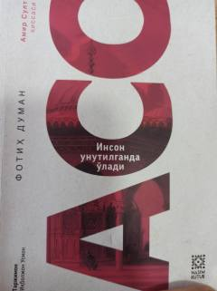

AAmir Sultonning hayot yo'li va ma'naviy dunyosi haqidagi falsafiy hikoya.
Ushbu asar Amir Sultonning hayoti va ma'naviy yo'li haqida hikoya qiladi. Voqealar Amir Sultonning qo'lida tutgan hassasi tilidan bayon etilib, o'quvchini insoniy qadriyatlar va haqiqatni anglashga chorlaydi.